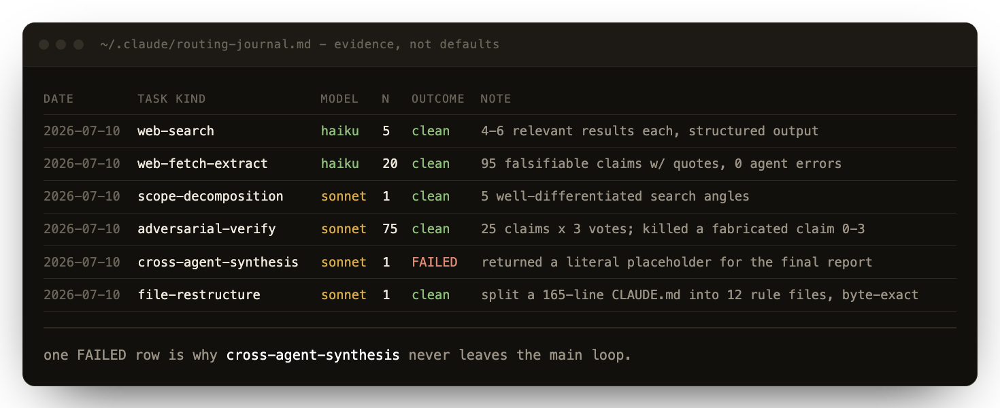
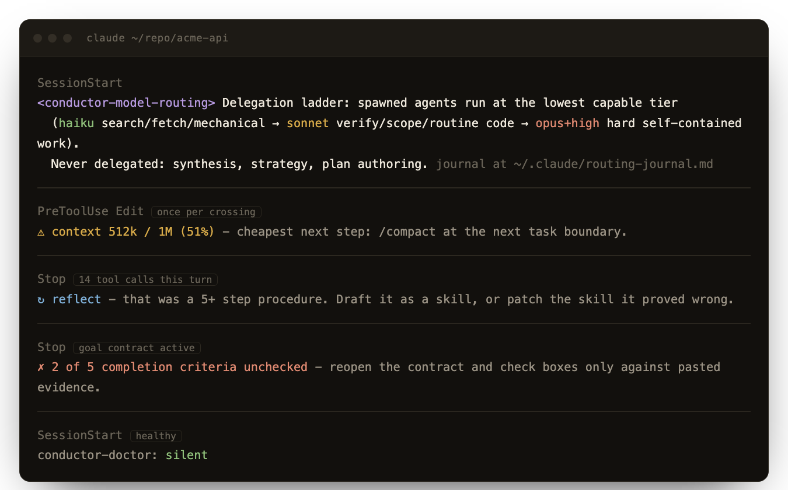
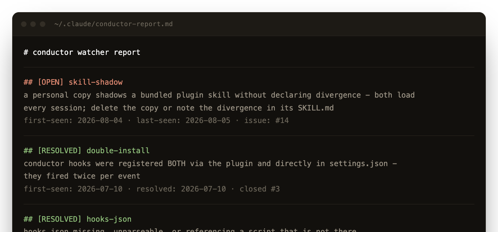

If your main loop runs on a frontier model, every token it spends on legwork is waste - and everything it learns dies with the session unless something reminds it to write things down. claude-conductor fixes both: seven hooks that stay silent until they are needed, and thirteen skills you invoke on demand.
A SessionStart hook injects one delegation ladder into every session. Spawned agents run at the lowest tier that can do the job; the main loop keeps the things that broke when they were delegated.
Search, fetch, extract, broad codebase sweeps, mechanical transforms, log and data sweeps.
Scoping, adversarial verification and judging, per-source analysis, routine coding subtasks.
Work a smaller tier demonstrably fumbles: hard debugging, complex multi-file changes, high-stakes judging - still self-contained enough to hand off.
Never delegated: cross-agent synthesis, strategy, architecture, plan authoring, anything that needs the whole conversation.
In a 102-agent research run, haiku handled every search, fetch and extract cleanly. Sonnet handled adversarial verification well - and failed cross-agent synthesis. That failure is why synthesis stays in the main loop.
The ladder was calibrated from outcomes, not from vibes. Themodel-router
skill keeps journaling them, so routing gets better with use.

Active immediately in every session, and near-zero cost on the happy path. Hook output is deterministic by design - byte-identical across sessions - so the conversation prefix stays prompt-cache-hot, where reads bill at a tenth of input price.

Injects the ladder above, plus the rule that subagent prompts stay narrow and self-contained so strategic context never leaks into worker prompts.
Every twelfth prompt, nudges the session to persist what is durable: facts to memory, any five-plus-tool-call procedure as a draft skill. Self-suppressing when nothing emerged.
A turn that used eight or more tool calls flags the session; the next prompt gets one reminder to draft the procedure as a skill, or patch what the task proved wrong.
Reads true in-context tokens from the transcript and warns once per crossing at 50, 75 and 90 percent of the model's real window, with the cheapest next step. Warn-only, never blocks.
If the session has an active goal contract with unchecked boxes, the next prompt gets a reminder to check them only against pasted evidence before anyone declares the task done.
Silent until always-loaded CLAUDE.md content crosses a threshold. Below it, chunking is counterproductive and inline is cheaper - so it says nothing.
A self-watcher over the plugin's own moving parts. Silent while healthy; on failure it
upserts an entry in conductor-report.md and writes the same entry back to
resolved once the check passes. Optionally mirrors each failure to one GitHub issue and
closes it on recovery.
Pair the doctor with your own scheduler: exit instantly unless the report has open entries, otherwise spawn a headless worker session to investigate and fix. The doctor keeps sole authority to close - a passing check is the only definition of fixed.

Nothing here runs on its own. Grouped by what they are for.
Episodic and distilled memory, kept local.
Incremental SQLite FTS5 index over every past transcript, searchable mid-task with ranked snippets and resume pointers. Stdlib only; around 200 sessions index in seconds.
The semantic complement: full-text search over the distilled layer - memory files, rules, and any knowledge bundles you point it at. Chunked by heading, credentials redacted at index time.
Distributed memory across machines over a private git remote, allowlisted paths only, with git's own merge machinery as the conflict resolver.
"Add this everywhere" writes a fact to every knowledge surface in one pass: one canonical copy, condensed pointers elsewhere, dedupe first.
One recency timeline across every surface, so the stale rule and the draft skill that has waited a month are both visible. Read-only.
Routing, reviewing, finishing, and staying safe.
Maintains a routing journal, one row per delegation outcome, and routes new work by accumulated evidence rather than static defaults. Also turns failed rows into human-reviewed patch proposals for the skill they implicate.
Two reviewers in parallel: one primed with the full spec and history, one with only the diff and the repo. What both raise is high confidence. The context asymmetry is the point.
Write the contract before starting: one-line goal, checkbox criteria each naming its required evidence, explicit non-goals. Unfinished boxes get reported as not done.
Distill what this session just solved into a draft skill while the context is still live. Checks for an existing skill first and proposes a patch instead of a duplicate.
Scan any third-party plugin, skill or MCP directory before you trust it: invisible Unicode, Trojan Source, ASCII tag smuggling, and known supply-chain indicators. Two zero-dependency scanners.
The on-demand full checkup, including judgement calls a script cannot make - context cost of unused skills, cross-surface duplication, stale caches - with every fix confirmed and then verified by re-running the check that flagged it.
Plugins accumulate. These rules are what stop this one from becoming the thing it was built to prevent.
claude plugin marketplace add shubhamparashar/claude-conductor
claude plugin install claude-conductor@claude-conductor-marketplace
# or, from a local clone
claude plugin marketplace add /path/to/claude-conductor
Hooks are live in the next session you open. If you previously copied these hooks and skills
into ~/.claude by hand, remove those entries first, or every hook fires twice.
For auto-updates against a private repo, set GITHUB_TOKEN. An org can pin itself
to approved marketplaces with managed settings and
strictKnownMarketplaces.